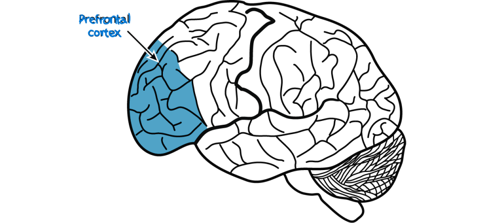

How does it affect us?
Where does it affect our brains?
And what can we do to prevent procrastination?
So how does procrastination affect us again?
Well I am just about to tell you
Procrastination affects us by increasing stress and reducing our overall well-being. When we push our tasks to the side, we typically experience a short sense of relief and happiness because we don't have to work at that moment, and if you think about it, it sounds about right. Pushing these tasks away affects us both mentally and emotionally by increasing anxiety, guilt, and pressure as deadlines approach. When we procrastinate, our productivity and performance often decline, which lowers our self-esteem, creating a cycle of avoidance and stress
Where does affect our brains?
This behavior is very closely connected to how the brain works, particularly in our prefrontal cortex, which is mainly responsible for planning, decision making, and self-control, and the limbic system, which finds comfort and immediate pleasure. Procrastination happens when the limbic system overpowers the prefrontal cortex, leading us to avoid tasks that feel difficult or boring. Over time, this pattern can become habitual, making it harder to focus and manage responsibilities.
What can we do to prevent procrastination?
We can help prevent procrastination by breaking big tasks into smaller ones, making the task itself more manageable and clear, and setting a better goal. Using time management techniques, minimizing distractions, practicing self-control, and focusing on progress rather than perfection, all of which help strengthen our ability to not procrastinate as much, support more healthy and productive habits.
Cites